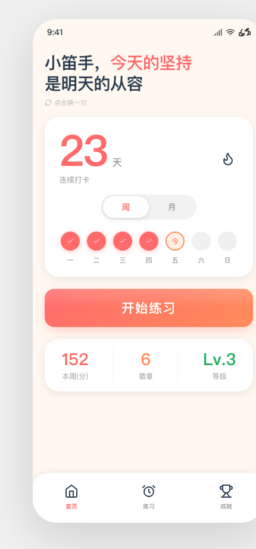
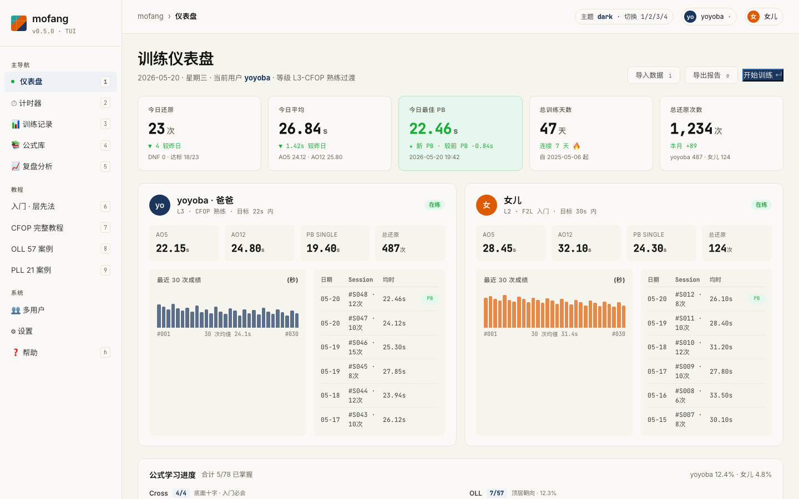
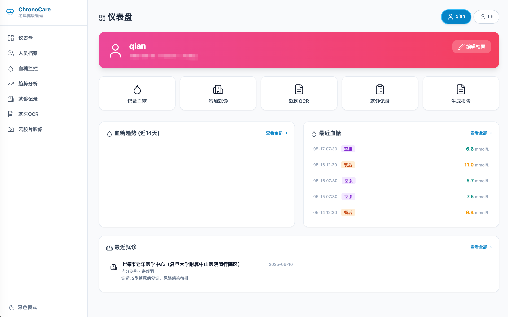
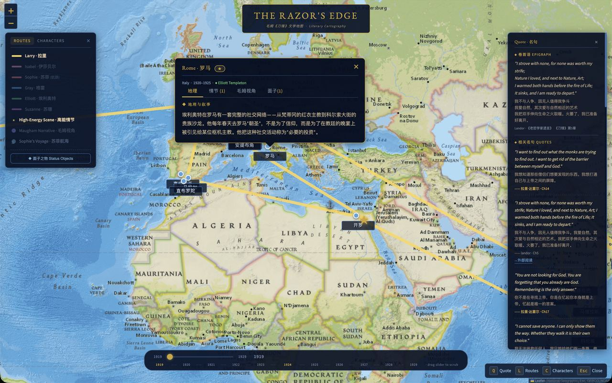
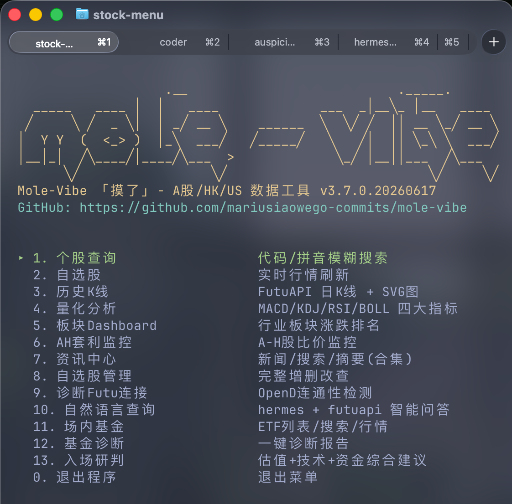
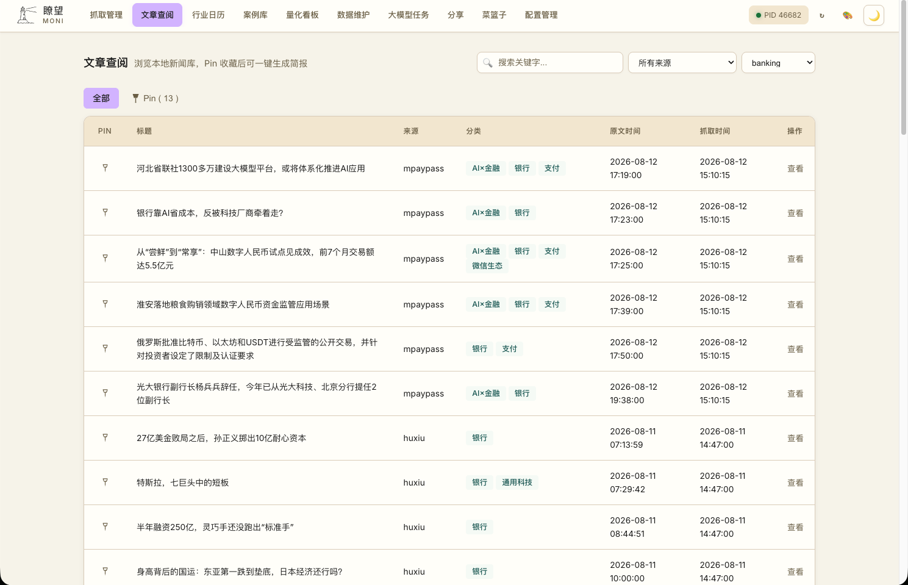
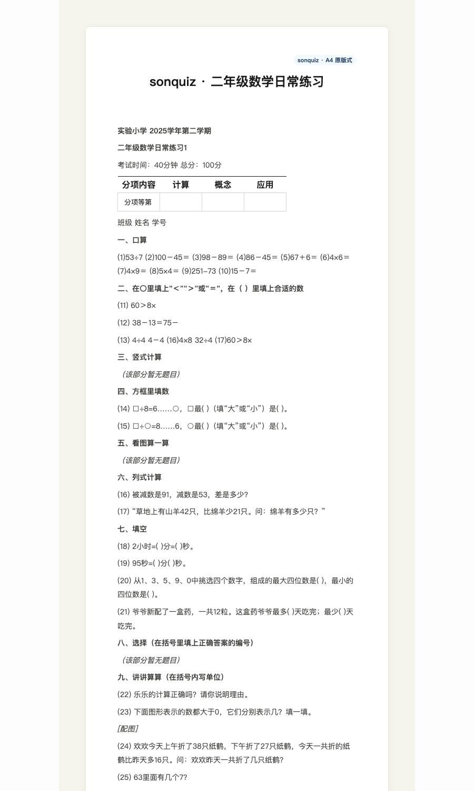
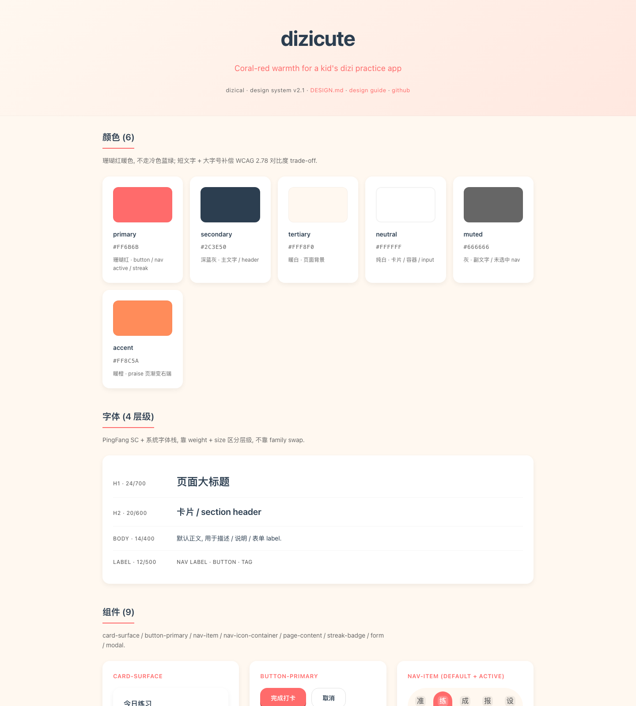
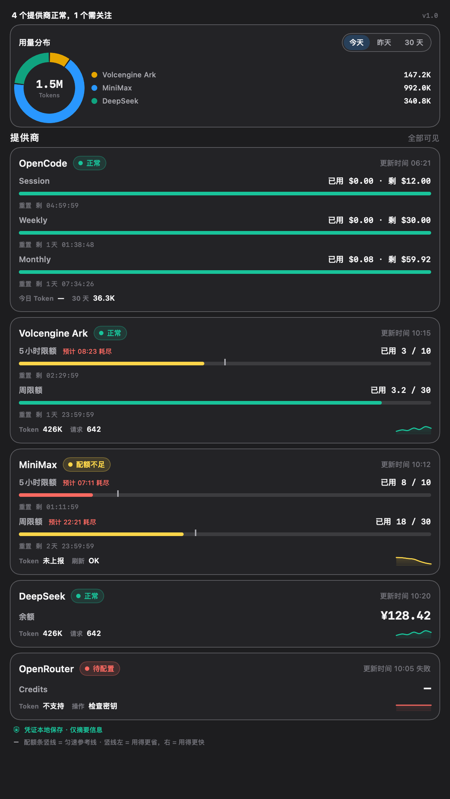

解决自己手头的问题、做给家人用、纯好玩——大部分是工具,有的还在缝缝补补。有的每天打开,有的已经收成一件可玩的东西。
笛卡尔说「我思故我在」,dizical 说「我练故笛在」——女儿每天打开微信「呦助」计时打卡,速度、老师要求、珐琅徽章写进同一份云端账本。爸爸在网页排课、录要求、出阶段汇报。缴费、练功、月报,还是这一家的竹笛课管家。

给女儿搭的魔方学练本。层先法进 CFOP 的教程和公式卡写在仓库里,终端里有一套 curses 壳。真正能看的是那张父女对照仪表盘——曲线是概念稿,计时还没接到真成绩上。

给父母做的本地健康档案。母亲血糖和化验、父亲两年就诊 PDF 收进同一套库;化验走 Vision OCR,病历走文本抽取,再出一页给老人看的健康报告卡。血糖、就诊、云胶片都在同一个本子里。

把毛姆《刀锋》里拉里从芝加哥到巴黎、苏伊士、印度的求道路线,叠在同一张 NatGeo 底图上。点航点读情节和名句,拖 1919–1929 时间轴看故事怎么走。入口挂了《卡拉马佐夫兄弟》,目前只是骨架。

工位上低调扫一眼自选。A股/港股/美股走本地富途 OpenD;终端里按两下还能查个股、AH、基金,窗口一关就没。六月以后日常面换成浏览器里的 Quiet Protocol:分组表、淡色涨跌、展开行带 SVG K 线,关页即走。

同业信源落到本地新闻库:多路 RSS / 公众号 / X 按关键词过滤,工作日定时入库。浏览器翻文章、Pin 完一键出简报,顺手沉淀行业日历和同业案例。

名字里塞了个文字游戏:宋的尾字母 g 和 quiz 的首字母 q 长得一模一样,压进 sonquiz 之后,中间那个 q 既是漏掉的 g,又是 quiz 的开头。给家里出小学数学卷:教材进结构化题库,按知识点抽题,吐可打印 Word。二下题库已冻,正在灌沪教三上。

自己用过的 UI 零件和设计令牌收在这里:单文件可拖可点,不是截图堆。现在入库 3 套设计系统(dizicute、CreditsBar、Vercel Geist)和 8 个可复用组件,另有 dizical 珐琅徽章墙。写新页面对着主题索引随用随查。

macOS 菜单栏点开 CreditsBar,一屏看 DeepSeek、OpenRouter、MiniMax、Moonshot、Nous Portal、火山 Ark、OpenCode 的余额和配额。API key 进 Keychain,Settings 不回显,日志 redact。四套主题可切,点开 HUD 会自动刷一轮。
